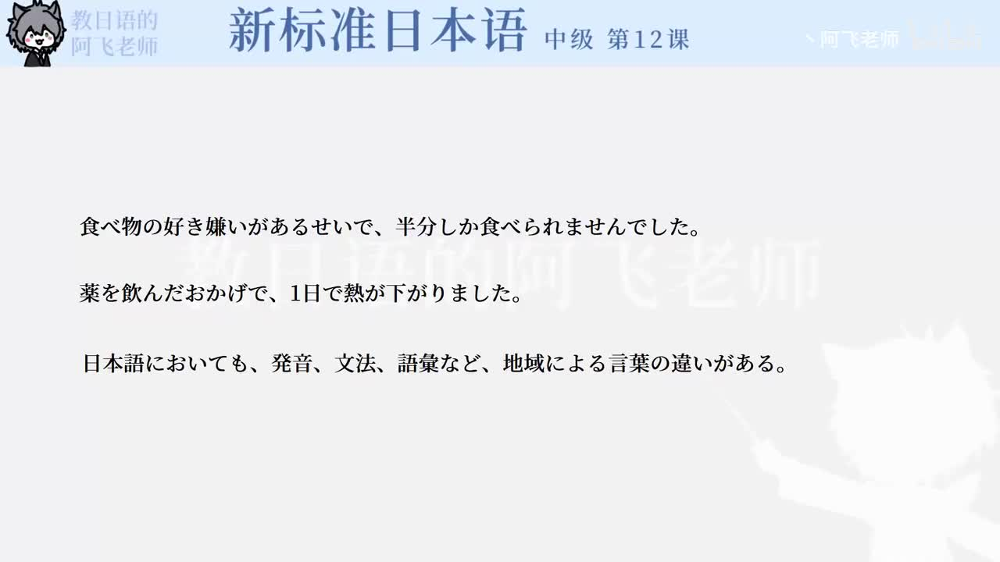

Bilibili P156 · Grammar
最後の日：原因、范围与依据
围绕第12课开头语法，比较负面原因、积极原因、领域范围和差异来源，重点区分「せいで」「おかげで」「においても」「による」。
全篇听力精讲
按 4 个语法点轮播。每项包含核心含义、接续、常见用法、易错提醒、教材例句和断句。
这一讲的语法地图
负面原因～せいで
积极原因～おかげで
领域范围～においても
来源依据～による
语法精讲
核心词汇与搭配
练习与复习
来源说明：视频标题、时长、CID 和首帧来自 Bilibili 公开视频接口；语法项目依据视频首帧与新标日中级第12课语法整理。